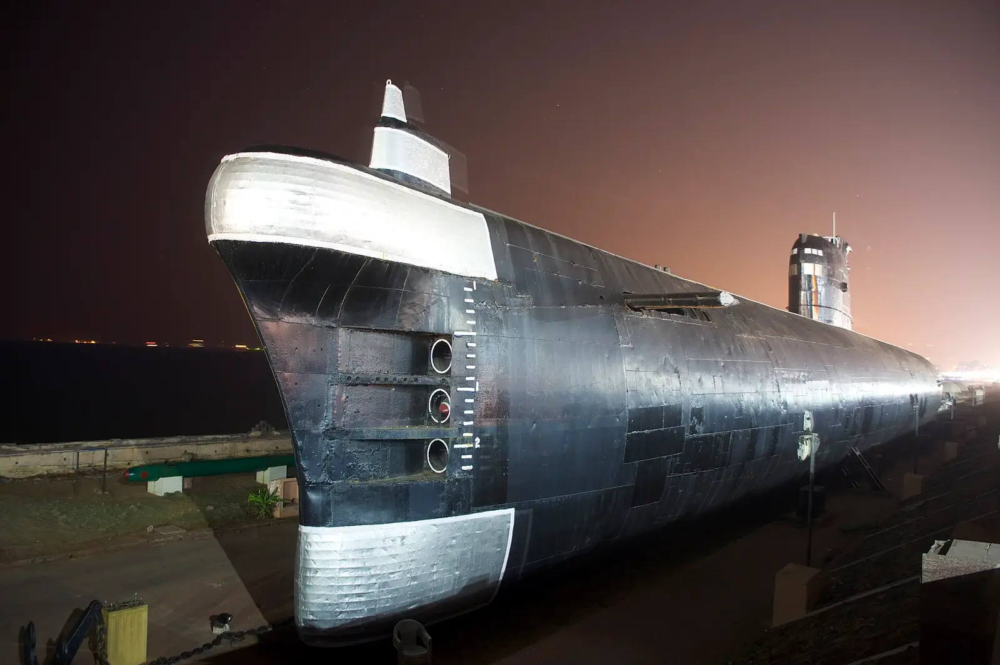

Day 1 · Stop 04 · Submarine museum
INS Kursura Submarine Museum
VMRDA submarine museum on RK Beach
A real Indian Navy submarine from 1969, now a walk-through museum on RK Beach.
- Commissioned in 1969
- Served in the 1971 war
- 91.3 m long, walk-through
- Length
- 91.3 m
- Beam
- 7.5 m
- Displacement
- 1,950 t surfaced · 2,475 t submerged
- Crew
- ~75 (8 officers, 67 sailors)
- Top speed
- 16 kn surfaced · 15 kn submerged
- Diving depth
- Up to 300 m
- Torpedo tubes
- 10

About INS Kursura Submarine Museum
INS Kursura (S20) was a Kalvari-class diesel-electric submarine, a variant of the Soviet Foxtrot class, and India's fourth submarine. She was commissioned at Riga on 18 December 1969 and served for 31 years, including patrols in the Indo-Pakistani War of 1971.
After she was decommissioned on 27 February 2001, she was brought ashore on RK Beach and opened to the public as a museum in August 2002. She is one of the very few submarine museums that keep their original fittings.
Walking through the narrow hull, past the torpedo room, engine rooms and control panels, shows how her crew of about 75 lived and worked underwater. Though retired, she still receives the Navy's 'Dressing Ship' honour.
What we'll see
- Walking the full length of a real submarine
- The torpedo room, control room and crew bunks
- The hull lit up at night on Beach Road
- Right on RK Beach: easy to pair with the evening walk
Photo gallery


Crew plan · Day 1 · Stop 4 of 8
Next door to RK Beach: a walk through the submarine before the evening on the promenade.
Open in Google MapsTips
- The interior is narrow, with low hatches: watch your head.
- Entry is ticketed; check opening days and times before you go.
- Visit before sunset, then stay for the promenade.